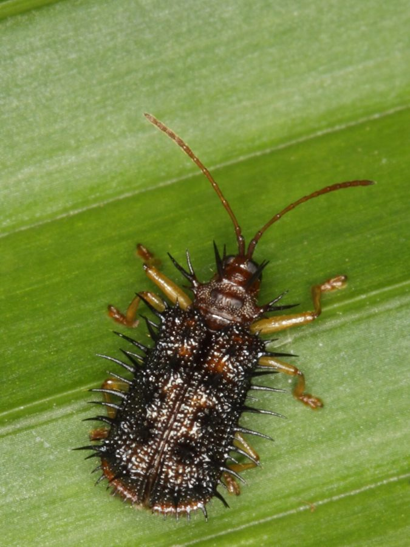

हिस्पाRice Hispa
Dicladispa armigera · Chrysomelidae · INS-0087

- Scientific name वैज्ञानिक नाम
- Dicladispa armigera (Olivier, 1790)
- Family कुल
- Chrysomelidae
- Hindi हिंदी
- हिस्पा
- Local names स्थानीय नाम
- hispa, dhan ka hispa, kanteela bhrung, rice hispa
- Status here यहाँ की स्थिति
- native
- Movement आवागमन
- Resident, here all year
- IUCN IUCN
- not evaluated
- Review समीक्षा
- audited and independently read
When to look कब देखें
Expected mainly in May, June, July, August, September, October, November. मुख्यतः मई, जून, जुलाई, अगस्त, सितंबर, अक्टूबर, नवंबर में अपेक्षित।
Uses and possibilities उपयोग और संभावनाएँ
Drawn from the documented uses in the profile below, where each is labelled traditional, current or a research lead. All uses →
हिस्पा / Rice Hispa
Dicladispa armigera (Olivier, 1790) — Chrysomelidae
हिस्पा — धान की पत्तियों को खुरचकर खाने वाला हरा या गोल्डन रंग का बीटल। पत्ती पर सफ़ेद धब्बे या पारदर्शी खिड़कियाँ बन जाती हैं जहाँ वह खा गया। लार्वा भी पत्ती के अंदर खोखली हो जाती है। कम फसल नुकसान करता है, पर कभी-कभी उबलाव भी हो जाता है। बरसात में तेज़।
Quick Identification त्वरित पहचान
| Feature | Description |
|---|---|
| Adult colour | Shining golden-green to bright metallic green |
| Size | 4–5.5 mm long; compact, oval |
| Surface | Smooth, slightly convex; elytra with fine punctation |
| Head | Small, partially covered by pronotum; snout absent |
| Legs | Reddish-brown; partially retractile |
| Damage pattern | Skeletonised areas on leaves; white to transparent patches where tissue is eaten |
| Leaf damage | Multiple small feeding windows; leaves may appear shot-hole-like |
| Nymphs | Pale yellowish, flat, found inside the leaf (leaf-miner habit) |
Field tip: Look at rice leaves in July–August: you will see shining green beetles crawling on the leaves. The leaves show characteristic transparent patches where the beetle has eaten away the tissue between the veins. The patches look like tiny windows or perforations.
हिंदी — कैसे पहचानें: धान की पत्ती पर सुनहरा-हरा चमकदार बीटल। पत्ती पर सफ़ेद खिड़कियाँ — पत्ती के ऊपर की चमड़ी खुरच गई है।
Morphology आकारिकी
Biometrics:
| Measurement | Range |
|---|---|
| Adult body length | 4–5.5 mm |
| Width | 2–3 mm |
| Egg | 0.8–1 mm, white to pale yellow |
| Larva (1st to 5th instar) | 1–4 mm, pale yellow, flattened |
| Pupal stage | 5–7 days inside the leaf |
Adult: Shiny, metallic green to golden-green (occasionally bronze), compact, slightly convex. Elytra (wing covers) are smooth with fine punctation. Head is small and partially enclosed by the pronotum, lacking a snout. Legs are relatively short and partially retractile. Antennae are 11-segmented.
Larva: Pale yellowish, flattened, whitish appearance. Develops entirely within the leaf tissue as a leaf-miner; feeds on the mesophyll (internal tissue), creating a hollow chamber. Five instars.
Egg: Small, pale, laid at the margin or inside a small slit made by the female on the leaf surface.
हिंदी: सुनहरा-हरा, चमकदार, छोटा बीटल। निम्फ़ पीला, पत्ती के अंदर। अंडा पत्ती की सीमा पर।
Behaviour & Ecology व्यवहार और पारिस्थितिकता
The rice hispa is a specialist leaf-feeder on rice and wild rice species. Both adults and larvae feed on the leaf tissue, causing a characteristic skeletonisation (feeding on the tissue between the veins). The adult chews windows through the leaf surface, and the larva, developing inside the leaf as a leaf-miner, further hollows the tissue. A leaf can have dozens of feeding windows, reducing its photosynthetic area, but the plant can tolerate moderate damage. Outbreaks occur occasionally in monsoon-dependent areas when heavy rain and high humidity favour the insect's development. Development from egg to adult takes 30–45 days depending on temperature; there are 2–3 overlapping generations per season in eastern UP.
Unlike the brown planthopper and pyrilla, which suck sap and can multiply explosively, the hispa is a generalist leaf-feeder and is usually kept in check by natural enemies, including spiders, parasitoid wasps, and ground beetles. Its damage is generally tolerated, though in some years populations can exceed economic thresholds. The insect overwinters as adults in crop residues and wild grasses.
हिंदी: पत्ती को खुरचकर खाता है, रस नहीं चूसता। अकेला कम नुकसान करता है, पर कई सौ हों तो पत्ती झड़ सकती है। मानसून में तेज़।
Life Cycle / Phenology जीवन चक्र
| Stage / season | Event |
|---|---|
| Egg, 5–8 days | Laid on leaf; female cuts a small slit |
| Larva, 20–25 days | Five instars inside the leaf; leaf-miner habit |
| Pupa, 5–7 days | Inside a pupal chamber in the leaf |
| Adult, 2–4 weeks | Feeds on leaves; lays eggs |
| Total development | 30–45 days at 25–28°C |
| May–June | Initial infestation on young Paddy |
| July–September | Multiple overlapping generations during monsoon |
| October | Populations decline; overwintering adults move to residues |
| November–April | Low populations; adults in crop residues and wild grasses |
हिंदी: अंडे से वयस्क तक 30–45 दिन। बारिश में दो-तीन पीढ़ियाँ। सर्दियों में सोया पड़ा रहता है।
Host Plants or Prey आहार
- Rice (Oryza sativa) — primary host
- Wild rice and wild Oryza species
- Does not feed on other cereals (wheat, maize); highly specialised
Predators / Natural Enemies शत्रु
- Spiders: jumping spiders, web-building spiders; effective on leaves
- Parasitoid wasps: egg parasitoids (Telenomus spp.); pupal parasitoids
- Ground beetles: carabids that feed on adults and larvae
- Ants: scavenge exposed stages
- Entomopathogenic fungi: Beauveria, Isaria under high humidity
- Ichneumonid parasitoids: parasitise late-instar larvae and pupae
Agricultural / Human Relevance कृषि प्रासंगिकता
Occasional pest of rice. The rice hispa causes damage by skeletonising leaves, reducing their photosynthetic area and causing premature senescence. Unlike the brown planthopper and pyrilla, which can destroy entire fields, the hispa rarely causes total loss; outbreaks are sporadic and usually controlled by natural enemies. Economic threshold is around 20–30 insects per hill or 5–10% leaf area damage. The insect is more of a nuisance in some years and hardly noticeable in others.
Today's management:
- Monitoring: Observation during the growing season; action only if populations exceed threshold.
- Insecticide: Rarely needed; carbaryl or other broad-spectrum sprays only in outbreak years.
- Biological control: Natural enemies are usually effective; field management to conserve spiders and parasitoid wasps.
Research direction (a lead, not a result). Population dynamics and factors driving occasional outbreaks; efficacy of parasitoid wasps under field conditions; leaf damage tolerance of different rice varieties.
हिंदी: दुर्लभ उबलाव। ज़्यादातर मकड़ी नियंत्रण करते हैं। दवा की शायद ही ज़रूरत।
Expected Locally स्थानीय रूप से अपेक्षित
Not a field record. Written from published accounts for eastern Uttar Pradesh. The rice hispa is documented on Paddy throughout India.
अभी तक स्थानीय पुष्टि नहीं। यह विवरण प्रकाशित स्रोतों से है।
Expected on Paddy in Basti district during the monsoon season (June–October), particularly on the mid-season and late plantings. Populations vary by year. A photograph of the characteristic metallic green beetle on Paddy leaves with skeletonised feeding damage, with date and location, would confirm a local record.
Distribution वितरण
Global range: Tropical Asia; found across rice-growing regions from India to the Philippines.
In India: All rice-growing states; endemic across the subcontinent.
In Uttar Pradesh: Throughout Paddy-growing areas; more common in eastern districts during monsoon.
In Basti district / eastern UP: Expected on Paddy during the kharif season; populations vary annually.
Research Questions शोध प्रश्न
Anyone can investigate these | कोई भी इन प्रश्नों की जाँच कर सकता है
- How many hispa beetles feed on a single Paddy leaf before the leaf is discarded by the plant? / एक पत्ती पर कुल कितने कीट खा सकते हैं? — Count damage windows; mark plants; observe senescence.
- Does heavy Paddy varieties tolerate hispa damage better than early varieties? / भारी किस्मों में कम नुकसान होता है? — Compare two varieties with equal infestation.
- How many days does the larva take to develop inside the leaf from egg to emergence? / निम्फ़ पत्ती में कुल कितने दिन रहता है? — Lay infested leaves on wet filter paper; monitor daily; identify emergence date.
- Which predator (spider, wasp, beetle) is most abundant in heavily infested Paddy? — Sample insects; count each predator type.
- Does the hispa infestation increase with rainfall in the monsoon? / बारिश के दिनों में ज़्यादा हिस्पा आता है? — Correlate rainfall data with insect counts.
Similar Species मिलती-जुलती प्रजातियाँ
| Species | How to tell apart | हिंदी |
|---|---|---|
| Other Dicladispa species | Different host plants; slightly different colour; difficult to distinguish without expert examination | दूसरी जाति, अलग पौधे पर |
| Leaf beetles (Chrysomelidae) on other crops | Feed on vegetables, pulses; different morphology and behaviour | दूसरी पत्ती भृंग, अलग पौधे पर |
| Sawfly on rice | Feeds on Paddy but much smaller and different morphology | आरी मक्खी, छोटी |
Field rule: Shining metallic green small beetle on Paddy leaves, with transparent feeding windows in the leaf tissue where the underside is exposed: rice hispa.
Taxonomy & Classification वर्गीकरण
Original description. Described by Olivier in 1790 in Entomologie as Crioceris armigera from specimens collected on rice in Java. The genus Dicladispa was erected by Fairmaire in 1889. Armigera refers to the armed (spiny) appearance of some related species.
Subspecies. No subspecies are currently recognised.
Family and order placement. Order Coleoptera (beetles), family Chrysomelidae (leaf beetles), subfamily Galerucinae. The genus Dicladispa comprises Old World rice-feeding leaf beetles.
Phylogenetic notes. Dicladispa armigera is a derived species within a clade of Asian leaf beetles, specialised on rice and wild Oryza. Its leaf-mining habit is derived; related species in the genus feed externally on leaves.
IUCN status rationale. Not evaluated. As an abundant and economically minor pest species, no conservation assessment is warranted.
Photo Gallery फोटो गैलरी
Photos needed आवश्यक फोटो
- [ ] Adult hispa on paddy leaf (पत्ती पर कीट)
- [ ] Skeletonised damage on leaf (खिड़कियों वाली पत्ती)
- [ ] Larval mines inside leaf (पत्ती के अंदर सुरंगें)
No photos yet — add field photos to media/species/rice_hispa/ and run node scripts/sync_photos.js.
References संदर्भ
- Olivier, A.G. (1790). Entomologie, vol. 5. Paris. [original description, as Crioceris armigera]
- Fairmaire, L. (1889). Exploration scientifique de la Tunisie. Coléoptères. Annales de la Société Entomologique de France 58: 1–87. [genus]
- Atwal, A.S. & Sandhu, G.S. (1971). Insect Pests of Crops and Their Control in India. Kalyani Publishers, New Delhi.
- Pathak, M.D. & Saxena, R.C. (1976). Resistance of rice varieties to insects and mites. International Rice Research Institute, Los Baños.
- Indian Council of Agricultural Research (2019). Integrated Pest Management Package for Rice. ICAR–NCIPM, New Delhi.
- GBIF Occurrence Data — Dicladispa armigera, India (2023).
Source file: species/fauna/insects/rice_hispa.md